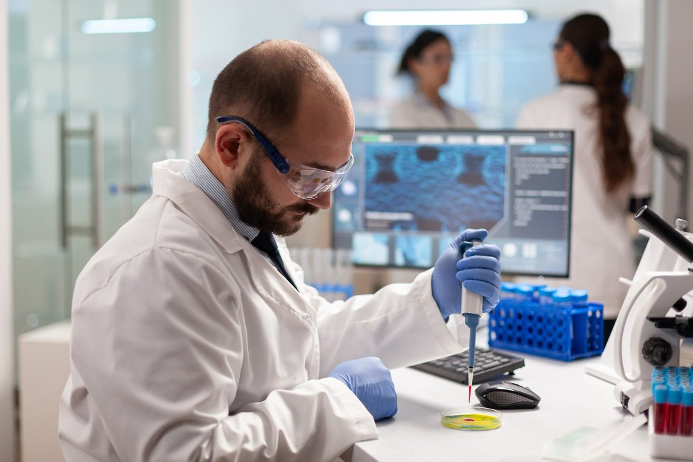
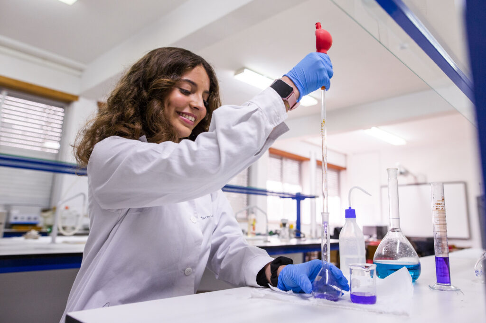

A Nossa Equipa Médica
Profissionais qualificados para garantir confiança, rigor e rapidez


A Nossa Equipa Técnica e Laboratorial
Profissionais qualificados para garantir confiança, rigor e rapidez no transporte e avaliação das vossas amostras!
Ana Silva
Técnica Laboratorial
Laboratório Central
Bruno Ferreira
Técnico Laboratorial
Laboratório Norte
Carla Santos
Técnica de Laboratório
Laboratório Sul
Daniel Costa
Técnico de Apoio Laboratorial
Laboratório Central
Eduarda Martins
Técnica de Laboratório
Laboratório Coimbra

Filipe Gomes
Técnico Laboratorial
Laboratório Lisboa
Gabriela Rocha
Técnica de Laboratório
Laboratório Central

Hugo Pereira
Técnico de Apoio Laboratorial
Unidade Norte

Inês Almeida
Técnica Laboratorial
Laboratório Algarve
João Rodrigues
Técnico Laboratorial
Laboratório Central